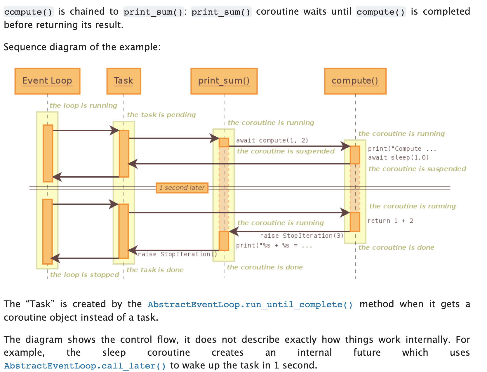

asyncio介绍
1、包含各种特定系统实现的模块化事件循环。
2、传输和抽象协议。
3、对TCP、UDP、SSL、子进程、延时调用以及其他的具体支持。
4、模仿futures模块但适用于事件循环使用的Future类。
5、基于yield from的协议和任务，可以让你用顺序的方式编写并发代码。
6、当我们必须使用一个将产生阻塞IO的调用时，有接口可以把这个事件转移到线程池。
7、模仿threading模块中的同步原语、可以用在单线程内的协程之间。
事件循环
1、高并发编程中的三个要素
- 事件循环
- 回调(驱动生成器)
- epoll(IO多路复用)
2、asyncio
asyncio是python用于解决异步io编程的一整套解决方案：
tornado、gevent、twisted（scrapy， django channels）
3、tornado
torando自己实现了实现web服务器！
django+flask使用第三方的web服务器：(uwsgi, gunicorn+nginx)
tornado可以直接部署： nginx+tornado（nginx实现了一些tornado没有实现的功能）
使用asyncio
# 使用asyncio
import asyncio
import time
async def get_html(url):
print("start get url")
# 同步的time.sleep不能使用在协程中！得使用自己的！
# 这是一个耗时的操作：得加上await
await asyncio.sleep(2)
print("end get url")
if __name__ == "__main__":
start_time = time.time()
# 自己完成select的操作
loop = asyncio.get_event_loop()
tasks = [get_html("http://www.imooc.com") for i in range(10)]
# 直接将任务传进去
""" 注意这里使用的是asyncio.wait """
loop.run_until_complete(asyncio.wait(tasks))
print(time.time()-start_time)
获取协程的返回值
方法1
# 获取协程的返回值
import asyncio
import time
from functools import partial
async def get_html(url):
print("start get url")
await asyncio.sleep(2)
return "whw"
""" 使用paratial的话，传的参数必须放在前边！"""
def callback(url, future):
print(url)
print("send email to whw")
if __name__ == "__main__":
start_time = time.time()
# 一个线程只有一个loop
loop = asyncio.get_event_loop()
# 使用loop.create_task方法
task = loop.create_task(get_html("http://www.imooc.com"))
# 可以添加一个callback！！！
# 注意只传函数名
# 使用partial包装callback！这样callback可以加参数了！partical方法返回的是个函数的地址
task.add_done_callback(partial(callback, "http://www.imooc.com"))
loop.run_until_complete(task)
print(task.result())
"""
start get url
http://www.imooc.com
send email to whw
whw
"""
方法2
# 获取协程的返回值
import asyncio
import time
from functools import partial
async def get_html(url):
print("start get url")
await asyncio.sleep(2)
return "whw"
def callback(url, future):
print(url)
print("send email to whw")
if __name__ == "__main__":
start_time = time.time()
loop = asyncio.get_event_loop()
# 调用asyncio.ensure_future —— 实际中返回的也是task类型
get_future = asyncio.ensure_future(get_html("http://www.imooc.com"))
loop.run_until_complete(get_future)
print(get_future.result()) # whw
"""
start get url
whw
"""
wait与gather
gather更加高级，使用更加灵活。
wait的方法
# wait 和 gather
import asyncio
import time
async def get_html(url):
print("start get url")
await asyncio.sleep(2)
print("end get url")
if __name__ == "__main__":
start_time = time.time()
loop = asyncio.get_event_loop()
tasks = [get_html("http://www.imooc.com") for i in range(10)]
loop.run_until_complete(asyncio.gather(*tasks))
print(time.time()-start_time)
gather的方法
# # wait 和 gather
import asyncio
import time
async def get_html(url):
print("start get url")
await asyncio.sleep(2)
print("end get url")
if __name__ == "__main__":
start_time = time.time()
loop = asyncio.get_event_loop()
# gather和wait的区别
# gather更加high-level
group1 = [get_html("http://projectsedu.com") for i in range(2)]
group2 = [get_html("http://www.imooc.com") for i in range(2)]
# gather方法
group1 = asyncio.gather(*group1)
group2 = asyncio.gather(*group2)
# 也可以取消掉任务
# group2.cancel()
# 直接传递多个group
loop.run_until_complete(asyncio.gather(group1, group2))
print(time.time() - start_time)
run_until_complete与run_forever
run_until_complete运行完指定的协程后自动停掉。
""" loop会被放到future中:这样在任何future或者task中loop都会被停止！ """
""" loop放在future中，future也放在loop中～很容易引起循环引用！ """
import asyncio
loop = asyncio.get_event_loop()
loop.run_forever() # 永不会停止
loop.run_until_complete(task...) # 自动停止
如何取消future(task)
import asyncio
import time
async def get_html(sleep_times):
print("waiting")
await asyncio.sleep(sleep_times)
print("done after {}s".format(sleep_times))
if __name__ == "__main__":
task1 = get_html(2)
task2 = get_html(3)
task3 = get_html(3)
tasks = [task1, task2, task3]
loop = asyncio.get_event_loop()
try:
loop.run_until_complete(asyncio.wait(tasks))
# 按了Ctrl+c后取消任务！
except KeyboardInterrupt as e:
all_tasks = asyncio.Task.all_tasks()
for task in all_tasks:
print("cancel task")
# task.cancel()会返回True或者False
print(task.cancel())
loop.stop()
""" # 必须调用run_forever() """
loop.run_forever()
finally:
loop.close()
协程的嵌套(互相调用)
详见asyncio官方文档：
import asyncio
async def compute(x, y):
print("Compute %s + %s ..." % (x, y))
await asyncio.sleep(1.0)
return x + y
async def print_sum(x, y):
result = await compute(x, y)
print("%s + %s = %s" % (x, y, result))
loop = asyncio.get_event_loop()
loop.run_until_complete(print_sum(1, 2))
loop.close()
时序图

其他函数:call_soon/call_at/call_later/call_soon_threadsafe
call_soon即刻执行
——在队列里面等到下一次循环的时候立即执行。
import asyncio
def callback(sleep_times):
print("success time {}".format(sleep_times))
# 停止
def stoploop(loop):
loop.stop()
#call_later, call_at
if __name__ == "__main__":
loop = asyncio.get_event_loop()
now = loop.time()
loop.call_soon(callback, 2)
loop.call_soon(callback, 1)
loop.call_soon(callback, 3)
# 停止
loop.call_soon(stoploop, loop)
loop.run_forever()
call_later
根据延迟调用的时间来调用，并且是在call_soon之后调用。
import asyncio
def callback(sleep_times):
print("success time {}".format(sleep_times))
# 停止
def stoploop(loop):
loop.stop()
if __name__ == "__main__":
loop = asyncio.get_event_loop()
now = loop.time()
# 第一个参数是指定的时间
loop.call_later(2,callback, 2)
loop.call_later(1,callback, 1)
loop.call_later(3,callback, 3)
# 先执行call_soon
loop.call_soon(callback, 4)
# # 停止
# loop.call_soon(stoploop, loop)
loop.run_forever()
"""
success time 4
success time 1
success time 2
success time 3
"""
call_at
import asyncio
def callback(sleep_times,loop):
print("success time {}".format(loop.time()))
# 停止
def stoploop(loop):
loop.stop()
#call_later, call_at
if __name__ == "__main__":
loop = asyncio.get_event_loop()
# 内部的单调时间
now = loop.time()
# 第一个参数是指定的时间 —— 是内部的时钟时间
loop.call_at(now+2,callback, 2,loop)
loop.call_at(now+1,callback, 1,loop)
loop.call_at(now+3,callback, 3,loop)
# 先执行call_soon
loop.call_soon(callback, 4,loop)
# # 停止
# loop.call_soon(stoploop, loop)
loop.run_forever()
"""
success time 22962.654698165
success time 22963.65639768
success time 22964.658318416
success time 22965.659323424
"""
call_soon_threadsafe
线程安全的方法 —— 与call_soon差不多，不过它是线程安全的 —— 用法与call_soon一样！
线程池与asyncio结合完成阻塞IO请求
—— 如果现实中某一个模块或者接口必须使用阻塞的话（pymysql等），可以将其放在线程池中运行！
# 使用多线程：在协程中集成阻塞io
import socket
import asyncio
from concurrent.futures import ThreadPoolExecutor
from urllib.parse import urlparse
""" 阻塞的接口 """
def get_url(url):
# 通过socket请求html
url = urlparse(url)
host = url.netloc
path = url.path
if path == "":
path = "/"
#建立socket连接
client = socket.socket(socket.AF_INET, socket.SOCK_STREAM)
# client.setblocking(False)
client.connect((host, 80)) # 阻塞不会消耗cpu
#不停的询问连接是否建立好， 需要while循环不停的去检查状态
#做计算任务或者再次发起其他的连接请求
client.send("GET {} HTTP/1.1\r\nHost:{}\r\nConnection:close\r\n\r\n".format(path, host).encode("utf8"))
data = b""
while True:
d = client.recv(1024)
if d:
data += d
else:
break
data = data.decode("utf8")
html_data = data.split("\r\n\r\n")[1]
print(html_data)
client.close()
if __name__ == "__main__":
import time
start_time = time.time()
loop = asyncio.get_event_loop()
# 线程池设为3
executor = ThreadPoolExecutor(3)
tasks = []
for url in range(20):
url = "http://shop.projectsedu.com/goods/{}/".format(url)
# 将某个阻塞IO的函数放在executor中运行
# 第一个参数是线程池 —— 第二个参数是阻塞函数，第三个参数是阻塞IO函数用到的参数
task = loop.run_in_executor(executor, get_url, url)
tasks.append(task)
loop.run_until_complete(asyncio.wait(tasks))
print("last time:{}".format(time.time()-start_time))
asyncio模拟简单的http请求
asyncio没有提供http协议接口，只提供了TCP/UDP协议接口。
如果想使用http协议请求url的话可以使用aiohttp——搭建http服务器或者做爬虫。
# asyncio 没有提供http协议的接口 aiohttp
import asyncio
import socket
from urllib.parse import urlparse
"""# 改成协程函数"""
async def get_url(url):
#通过socket请求html
url = urlparse(url)
host = url.netloc
path = url.path
if path == "":
path = "/"
# 建立socket连接
"""# 使用await"""
reader, writer = await asyncio.open_connection(host,80)
writer.write("GET {} HTTP/1.1\r\nHost:{}\r\nConnection:close\r\n\r\n".format(path, host).encode("utf8"))
all_lines = []
async for raw_line in reader:
data = raw_line.decode("utf8")
all_lines.append(data)
html = "\n".join(all_lines)
return html
async def main():
tasks = []
for url in range(20):
url = "http://shop.projectsedu.com/goods/{}/".format(url)
tasks.append(asyncio.ensure_future(get_url(url)))
for task in asyncio.as_completed(tasks):
result = await task
print(result)
if __name__ == "__main__":
import time
start_time = time.time()
loop = asyncio.get_event_loop()
loop.run_until_complete(main())
print('last time:{}'.format(time.time()-start_time))